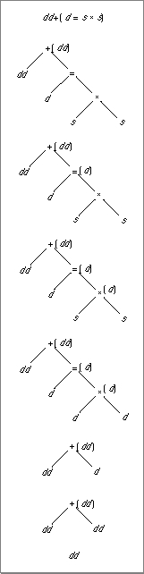

Evaluating Expressions With Widest Need
Widest-need evaluation first looks at all of the operands of all of the subexpressions in a complex expression to determine the semantic type of the complex expression. As before, if the semantic type is wider than the minimum evaluation format, the semantic type is the evaluation format. If not, the minimum evaluation format is used. Only subexpressions with operations subject to the usual arithmetic conversions are considered when determining the evaluation format; operations such as assignment statements or casts are ignored.After the evaluation format is determined, widest-need evaluation applies this format to the operands of the outermost operation in the expression using one of the following rules:
These three rules are applied repeatedly until the end of the expression is reached. For example, consider the C expression in Figure 3-2. Widest-need evaluation looks at this expression as the addition of a double-double variable to the result of another expression. To determine the evaluation format of this addition operation, widest need first looks at all of the variables and constants in the entire expression that are not part of a function call, cast, or assignment operation. There is only one variable that meets these requirements, and it is in double-double format. Therefore, double-double format is the evaluation format of the addition operation.
- If the operand is a floating-point variable or constant, it is converted to the evaluation format.
- If the operand is an operation subject to the usual arithmetic conversions (for example, arithmetic operations and comparison operations) or the assignment of values to function parameters, its operands are converted to the evaluation format before the operation is performed.
- If the operand is an operation not subject to the usual arithmetic conversions (for example, an assignment operation, function call, or cast), its evaluation format is determined separately from the outer expression. After the operation has been performed, its result is converted to the evaluation format of the complex expression.
Now, widest-need evaluation can apply the addition operation's evaluation format to the rest of the expression using the three rules just given. Addition is an operation subject to the usual arithmetic conversions, and so its operands will be converted before the operation is performed. The first operand is a double-double variable, so it will be converted to the evaluation format immediately. (In this case, the variable already is in the evaluation format.) The second operand is an assignment operation. The assignment operation is not subject to arithmetic conversions, so it will be performed before any conversion takes place. This means that the evaluation format for the assignment operation must be determined. The operation's semantic type is double, so it will be performed in double precision.
As before, this double format must now be applied to the operands of the assignment. The first operand is already in double format. The second operand is a multiplication operation. Because multiplication is subject to the usual arithmetic conversions, its operands are converted before the operation is performed. Both of the multiplication operation's operands are single-format variables, so the values of these two variables are converted to double. The multiplication operation is calculated in double precision. Now the assignment can be performed, resulting in a double-format number. This result of the assignment statement is now the second operand of the addition operation. It is converted to double-double format, and then the addition is performed in double-double precision.
Figure 3-2 Evaluating complex expressions with widest need
